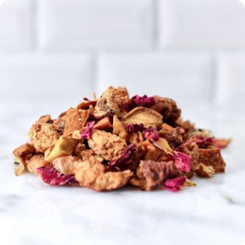

Trái Cây
Về Organic Food
Organic Food Thực phẩm hữu cơ là cửa hàng chuyên cung cấp những loại thực phẩm được sản xuất bằng phương thức và tiêu chuẩn của nông nghiệp hữu cơ. Tiêu chuẩn về thực phẩm hữu cơ là khác nhau trên thế giới. Tuy nhiên nông nghiệp hữu cơ nói chung luôn hướng đến nuôi trồng thúc đẩy cân bằng sinh thái, đa dạng và bảo tồn đa dạng sinh học.
Trong sản xuất nông nghiệp hữu cơ, Organic Food hạn chế sử dụng một số loại thuốc trừ sâu, thuốc diệt cỏ và phân bón tổng hợp. Thực phẩm hữu cơ cũng không được phép xử lý bằng chiếu xạ, dung môi công nghiệp hoặc các chất phụ gia thực phẩm tổng hợp.
Organic Food có gì?
Tại sao nên dùng sản phẩm của Organic Food?
Rau sạch đầu tiên và duy nhất mà bạn có thể truy xuất nguồn gốc chi tiết, biết chính xác gói rau của mình đã được trồng như thế nào, từ khi làm đất, gieo hạt đến khi thu hoạch, thông qua hệ thống Nhật ký điện tử.
Rau sạch đầu tiên và duy nhất tại Việt Nam có tem chống giả trong từng gói rau. Dù bạn mua rau sạch Organic ở đâu, chỉ cần kiểm tra tem chống giả có hiệu lực, đó chắc chắn không phải rau bị trà trộn
Được trồng theo Quy trình an toàn của Bộ Nông nghiệp và Bộ Y tế ban hành, an toàn cho bạn và bền vững cho môi trường.
Organic Food phát triển như thế nào?
Phát triển kỹ thuật sản xuất
Chuyển giao công nghệ - kỹ thuật
Phát triển Nông nghiệp Thông minh
Blog của Organic Food
Hãy cùng chúng tôi chế biến những món ăn tốt cho sức khỏe
Yogurt trái cây
Chút vị ngọt ngào của các loại trái cây, chút men chua của sữa chua hoà nguyện với nhau...nhìn dịu dàng...quyến rũ....lắm đa...
Rau củ xào thịt
Thịt xào rau củ vừa chứa nhiều chất dinh dưỡng vừa tạo cảm giác ngon miệng, không bị ngấy là món ăn được nhiều gia đình Việt yêu thích. Vậy, bạn đã biết cách chế biến món thịt xào rau củ thập cẩm chưa?

Yogurt trái cây
Chút vị ngọt ngào của các loại trái cây, chút men chua của sữa chua hoà nguyện với nhau...nhìn dịu dàng...quyến rũ....lắm đa...
Rau củ xào thịt
Thịt xào rau củ vừa chứa nhiều chất dinh dưỡng vừa tạo cảm giác ngon miệng, không bị ngấy là món ăn được nhiều gia đình Việt yêu thích. Vậy, bạn đã biết cách chế biến món thịt xào rau củ thập cẩm chưa?
Hướng dẫn mua hàng
Tìm kiếm và lựa chọn sản phẩm mong muốn
Thêm sản phẩm vào giỏ hàng
Điền các thông tin cần thiết
Organic Food giao hàng tận nơi theo yêu cầu của khách hàng